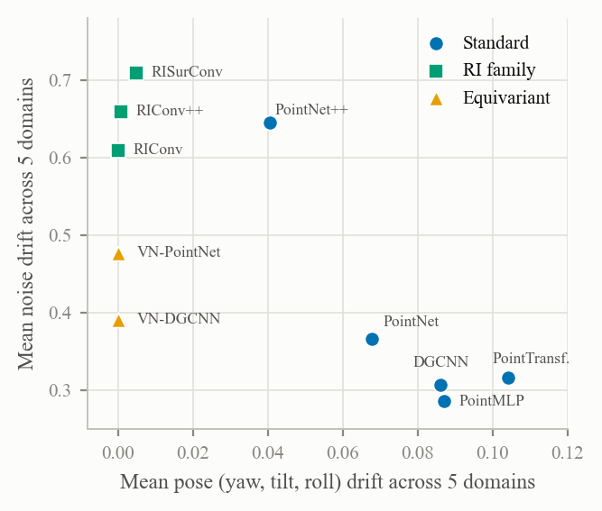

Do We Still Need Rotation-Invariant Architectures? A Statistical Robustness Benchmark for Point Cloud Classification
WACV 2027, Datasets Track (accepted, to appear)
A benchmark of 10 architectures across 5 domains under pose, noise and occlusion, analysed with hypothesis tests. Rotation-invariant designs are the most robust to pose and among the least robust to noise. With a simple invariance loss, standard backbones end on par with them on unseen corruptions.